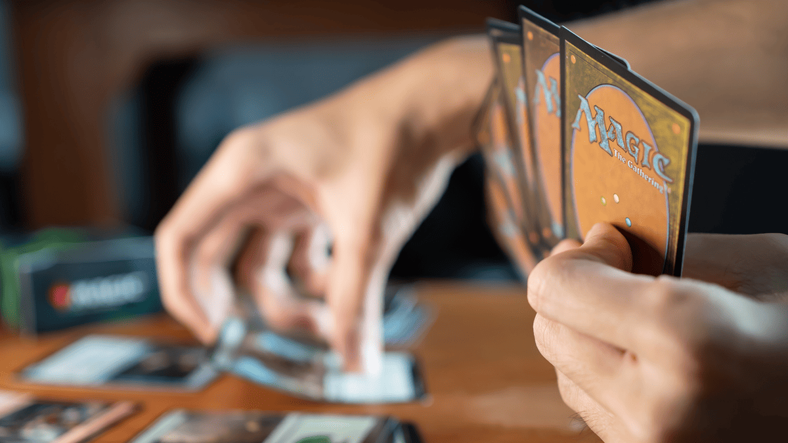
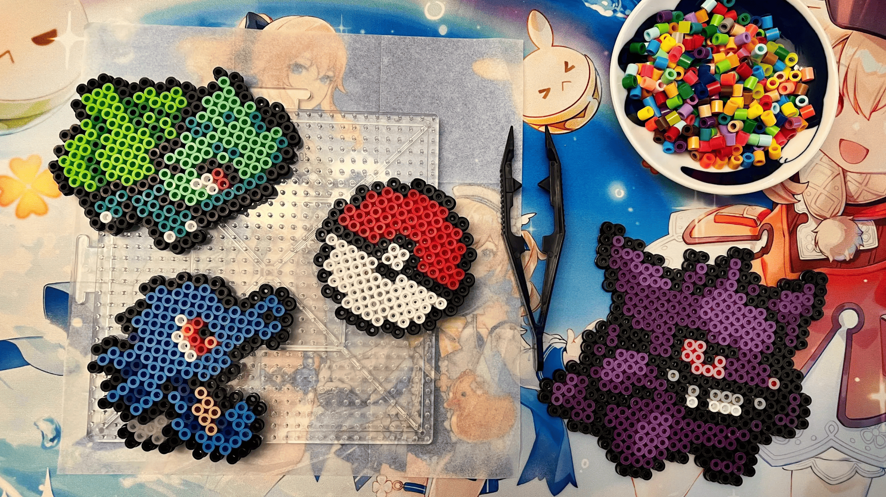

Kochen
Kochen ist eines meiner liebsten Hobbys. Auch wenn ich im Moment nicht oft dazu komme, genieße ich es sehr, neue Rezepte auszuprobieren und kreativ am Herd zu sein. Für mich ist Kochen Entspannung und Ausdruck zugleich.
Kartenspiele
Ich liebe es, mit Freunden spannende Kartenspiele zu spielen - ob Isaac: Four Souls, Magic: The Gathering oder Yu-Gi-Oh!. Es geht nicht nur ums Gewinnen, sondern um gemeinsame Taktiken, überraschende Züge und jede Menge Spaß am Spieltisch.
Bügelperlen & Pixel Art
Ein besonderes Hobby von mir ist das Gestalten mit Bügelperlen - vor allem in Form von Sprites aus klassischen Pixel-Art-Videospielen. Diese kleinen Perlen lassen sich wie Pixel anordnen und sind damit ideal, um bekannte Figuren, Items oder Szenen aus Retro-Games nachzubilden. Es ist eine kreative Art, meine Leidenschaft für Games und Kunst zu verbinden.
Videos schneiden/Editieren
Manchmal schneide ich Videos einfach zum Spaß - meistens Memes, die ich mit Freunden teile. Ich liebe es, beim Editieren Ideen umzusetzen und kreative Clips zu gestalten. In Zukunft will ich mich noch mehr mit Video-Editing beschäftigen und vielleicht einen Youtube Channel zu starten.
Zeichnen
Ich folge vielen Artists online, weil mich Fanart und Kunst faszniert. Schon als Kind hat mich Zeichnen begeistert - sei es beim Kritzeln auf Schulheften oder beim Nachzeichnen meiner Lieblingsfiguren. Auch wenn ich noch ganz am Anfang stehe und vieles dazulernen muss, macht mir das Zeichnen unglaublich viel Spaß.

